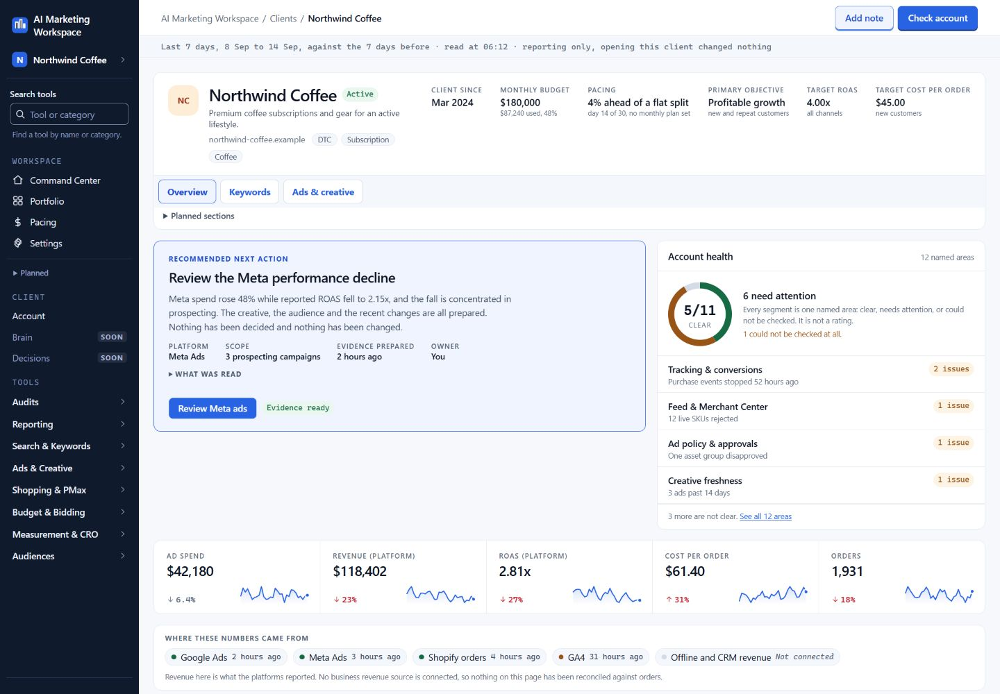
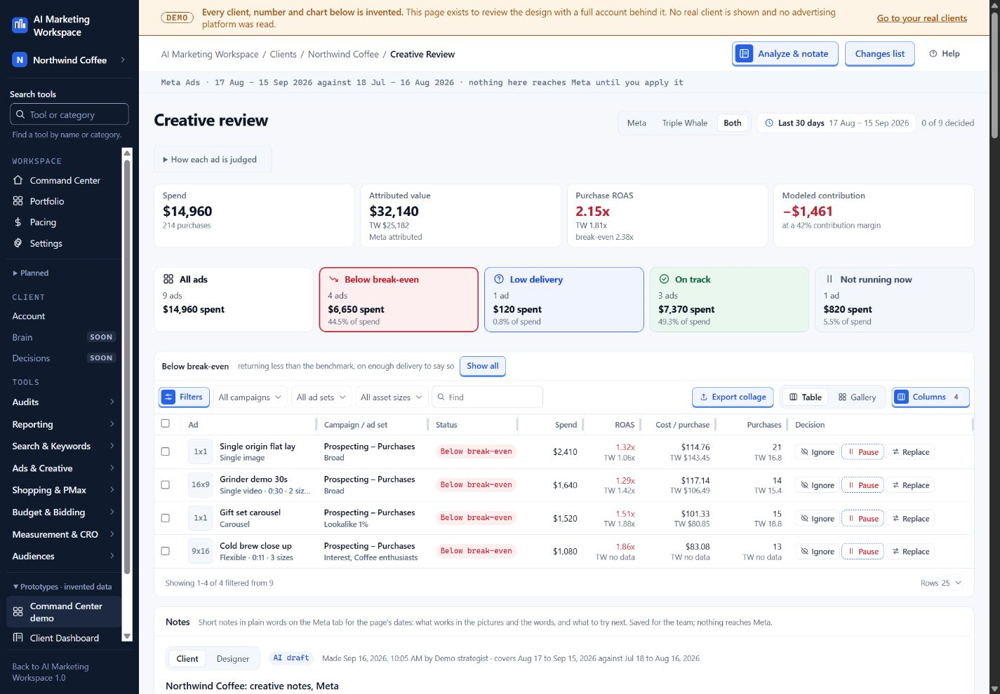
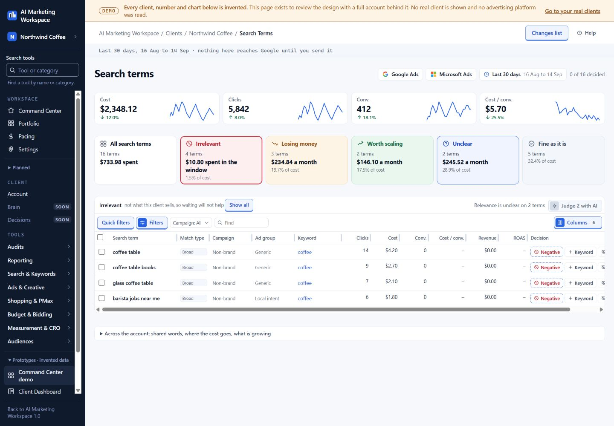

AdNexus: the team standard, built into software
AdNexus is elk Marketing's AI operating system for paid media. I conceived it, wrote the requirements and built it, starting in May 2026. It is in production on live client accounts. The screens on this page use fictional client data.

Why I built it
My team works from a written standard: know the business before touching the account, change one thing on purpose, prove the change landed, and explain why. I spent years teaching it through a 200-page guide, account audits and reviews of people's work. The standard was sound. Following it on every account, every day, was the hard part.
The facts a strategist needs are spread across a dozen tools: campaign numbers, client goals, past decisions, creative, tracking, tasks and client messages. AI did not fix that on its own. Handing someone an empty chat box still leaves them to work out what to ask, which source to trust and what to do with the answer. If AI adds work, a busy strategist stops using it.
So AdNexus starts from the task instead of the prompt. A strategist opens an account and sees what needs a decision, with the context already loaded and the standard's checks already run.
What I built, and how
AdNexus connects Google Ads, Meta, TikTok, Microsoft Advertising, GA4, Triple Whale, Slack, Asana and meeting transcripts. A strategist asks a question in plain English and gets a sourced answer, a dashboard or a change ready for approval.
I built it with Claude Code and Codex on Next.js, TypeScript and Postgres. Between July 15 and October 12, 2026, 860 of my pull requests were merged, each through CI on a protected main branch. The same tools are available to AI assistants through a 165-tool MCP server, and the system holds 34 client workspaces.
Scroll sideways to see all columns.
| Part | What it does |
|---|---|
| Daily decision desk | Numbers first, at most five work items, a plain-English next step |
| Smart Reviews | Search terms, ad copy, landing pages, budgets, pacing and creative, run when the strategist asks |
| 18 scheduled monitors | Quiet while an account is healthy; a finding, evidence and a prepared fix when it is not |
| Creative Confidence | Statistical scoring of every Meta ad, so a new ad is not judged on one day of spend |
| What Changed | Compares two periods and says where a change is concentrated and what to check next |
| Governed changes | Preview, approval, live re-check, one dispatch, read-back, audit log and undo |
By my own estimate, it gives each strategist back 20 or more hours a week that used to go to collecting facts and retyping them.
Start with the account
The account view puts the client's goals, budget, performance, open work and constraints on one screen, before anyone opens a tool. It also keeps the client context that usually lives in someone's head: the products that matter, the target customer, approved copy rules and upcoming events.
It shows urgency and readiness separately. A broken tracking tag is urgent even when there is not yet enough data to diagnose it. An ad review can be ready to decide even when nothing is on fire. Seeing both tells the strategist where to start.

Explain what changed
When results move, What Changed compares two matching periods, finds where the change is concentrated, and writes a short explanation with the evidence attached. It separates what the numbers show from possible causes, and pulls in notes, tasks and recent account changes so the strategist knows what to check.
In the public demo, Meta return falls from 3.2x to 2.4x week over week. Prospecting accounts for the whole drop while retargeting holds. A vague "Meta is down" becomes one specific question about prospecting.
Saved investigations keep their original evidence, so a later data refresh cannot quietly rewrite last week's explanation.
Review creative as ads, not rows
An ad is more than a return figure. The creative review shows the ad itself beside its results, lets the strategist switch attribution views, and records the decision. Different attribution sources often disagree. Hiding that makes a tidier page and a worse decision.

The review then feeds the next brief: audience, buying moment, objection, promise, proof, format and destination, with the one thing being tested named. See how I write briefs.
Make search-term review manageable
Search-term review can mean hundreds of rows. AdNexus groups them into queues and keeps every decision visible before anything is applied. A clearly wrong search, like "coffee table" for a coffee brand, is handled differently from a relevant search with too little data to judge.

Every change goes through one gate
Nothing touches a client account without a person's approval. Each change to Google or Meta is previewed with its exact scope, approved, re-checked against the live account, sent once, read back and logged with a way to undo it. New campaigns and ads are created paused. Launch Guard watches for an ad that lands in the wrong client's account and flags it.
This is the "prove the change landed" rule from the team standard, written into code.